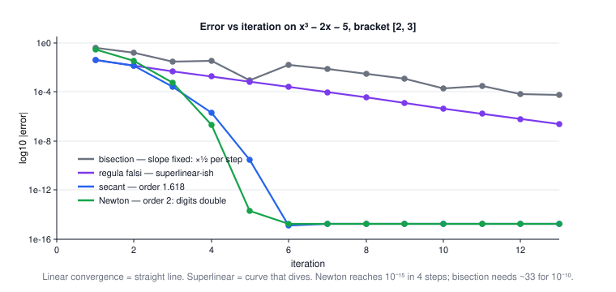
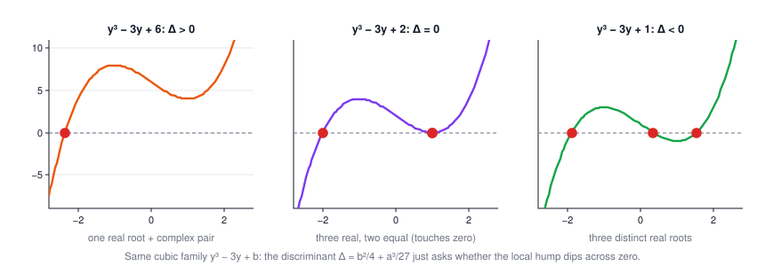
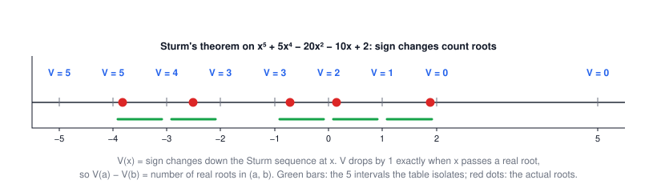

Lecture 5: Root Finding
CSE 276C, Lecture 5 · Prof. Henrik Christensen · Numerical Recipes ch. 9. All numbers verified in
scripts/lec5/verify.py.The big picture
Lectures 3–4 built function approximations. This lecture inverts the question: given f, find where it crosses zero. The whole lecture is one ladder — each rung uses more knowledge of f to go faster, and pays for it with less safety:
sign change (bracket) → halve it (bisection) → use 2 values (secant) → use 3 (Brent) → use the derivative (Newton)
| robotics problem | what you have | what you need | method |
|---|---|---|---|
| inverse kinematics | hand-position equations | joint angles | multivariate Newton |
| collision detection | distance(t) between robot and obstacle | time where distance = 0 | bracketing + Brent |
| optimal control switch times | a condition that flips sign | the switching instant | root finding on the condition |
| camera / sensor calibration | polynomial constraints | all solutions | polynomial roots + deflation |
1 · Why robots solve f(x) = 0
Two families, per the slides: general non-linear systems (searched numerically) and polynomial systems (which can be factorized, counted, and sometimes solved exactly). The next six sections handle the first family; sections 8–10 the second.
2 · Bracketing: know where to look
Everything safe starts from an interval where the function changes sign:
$$f(a)\,f(b) < 0$$A continuous function that is negative at one end and positive at the other must cross zero in between — that interval is a bracket, and it's a certificate: the root cannot escape.
3 · Bisection: the method that cannot fail
Evaluate the midpoint, keep whichever half still has the sign change:
$$c = \frac{a+b}{2}, \qquad f(a)f(c) < 0\;?\;\text{keep } [a,c] : \text{keep } [c,b]$$| symbol | meaning |
|---|---|
| \(s_n\) | bracket width after n steps: \(s_{n+1} = s_n/2\), guaranteed |
| \(n = \log_2(s_0/s)\) | evaluations needed to shrink \(s_0\) down to \(s\) |
| \(s_{n+1} = \text{const}\cdot s_n^m\) | convergence order: \(m=1\) is linear, \(m>1\) superlinear |
Worked example: how many steps is "10 digits"? (click to open)
Bracket of width 1, target \(10^{-10}\): \(n = \log_2(1/10^{-10}) = \log_2 10^{10} \approx 33.2\), so 34 evaluations — regardless of the function. One bit of accuracy per evaluation, rain or shine. On the same problem Newton needs 4 (see Fig 1).
4 · Secant & regula falsi: use the values, not just the signs
Bisection throws away the sizes of f(a), f(b) and keeps only their signs. The secant method fits the line through both points and jumps to its zero:
$$\Delta = \frac{f(a)-f(b)}{a-b}, \qquad c = -\frac{f(a)}{\Delta}, \qquad d = a + c$$| symbol | meaning |
|---|---|
| \(\Delta\) | slope of the chord through the two latest points — a free derivative estimate |
| \(d = a + c\) | where that chord crosses zero: the next guess |
| order 1.618 | \(\lim |s_{k+1}| = \text{const}\,|s_k|^{1.618}\) — the golden ratio, from the two-term error recursion |
Two siblings, one difference:
- Secant always keeps the two newest points → fastest, but can lose the sign change and wander.
- Regula falsi always keeps two points of opposite sign → never loses the root, but on curvy functions one endpoint gets stuck and it crawls.
When does secant stumble? The slides' answer: when the 2nd derivative changes a lot near the root — the chord then misrepresents the function badly.
🕹️ Try it: race all three on the same bracket. Step through; the log-error chart tells convergence orders apart at a glance. The flat preset is bisection's revenge.
5 · Brent's method: the one you actually call
Three points define a sideways parabola (inverse quadratic interpolation). Setting y = 0 in the Lagrange form gives the update
$$x = b + \frac{P}{Q}, \qquad P = S\big(T(R-T)(c-b) - (1-R)(b-a)\big), \qquad Q = (T-1)(R-1)(S-1)$$| symbol | meaning |
|---|---|
| \(R = f(b)/f(c),\; S = f(b)/f(a),\; T = f(a)/f(c)\) | ratios of the three latest values |
| \(b\) | current best estimate; \(P/Q\) is a (hopefully small) correction |
The actual idea of Brent is the safety logic: take the fancy \(P/Q\) step only when it lands
inside the bracket and shrinks fast enough; otherwise fall back to a bisection step. Superlinear speed
with bisection's guarantee — the slides call it "generally the recommended method", and it's what
scipy.optimize.brentq does.

6 · Newton-Raphson: use the derivative itself
Taylor-expand around the current guess and keep only the linear term:
$$f(x+\delta) \approx f(x) + f'(x)\,\delta = 0 \;\Rightarrow\; \delta = -\frac{f(x)}{f'(x)} \;\Rightarrow\; x_{n+1} = x_n - \frac{f(x_n)}{f'(x_n)}$$Geometrically: slide down the tangent to where it hits zero, repeat. Convergence is quadratic (order 2): near the root, the number of correct digits doubles each step.
🕹️ Try it: drag x₀ and watch the tangent cascade. The cycle preset is the slides' warning about seeds made flesh: 0 → 1 → 0 → 1 forever.
Many unknowns: the multivariate case
For a system \(f_i(\vec x) = 0\), the first-order term becomes the Jacobian \(J_{ij} = \partial f_i / \partial x_j\) — the same matrix as Lecture 2 — and each Newton step is a linear solve:
$$J\,\delta\vec{x} = -\vec{f} \;\;(\text{solve with LU}), \qquad \vec{x}_{new} = \vec{x}_{old} + \lambda\,\delta\vec{x},\;\; \lambda \in [0,1]$$λ < 1 is damping: take a fraction of the step when the full one overshoots. Note the full circle: root finding per step costs one Lecture-2 linear solve.
7 · Robot interlude: inverse kinematics is root finding
A 2-link arm (links = 1) reaches distance d when the elbow angle satisfies \(f(\theta) = 2 + 2\cos\theta - d^2 = 0\). Solve it with Newton and you've done IK:
🕹️ Try it: drag the target. Then switch to the almost-straight seed and watch f′ ≈ 0 hurl the elbow through a full revolution — the 1-D version of a singular Jacobian.
Worked example: reach d = 1.3 (click to open)
\(f(\theta) = 2 + 2\cos\theta - 1.69\), \(f'(\theta) = -2\sin\theta\). From \(\theta_0 = 2.5\): Newton lands on \(\theta = 1.72642\) in 4 steps. Closed-form check: \(\arccos\!\big((d^2-2)/2\big) = \arccos(-0.155) = 1.72642\) ✓.
8 · Polynomial roots: when there's a formula
Degree ≤ 4 has closed forms. Quadratic you know. The cubic \(x^3 + px^2 + qx + r = 0\) is first depressed (substitute \(x = y - p/3\), killing the square term):
$$y^3 + ay + b = 0, \qquad a = \tfrac{1}{3}(3q - p^2), \quad b = \tfrac{1}{27}(2p^3 - 9pq + 27r)$$then Cardano's formula gives \(y_1 = A + B\) with \(A,B = \sqrt[3]{-\tfrac{b}{2} \pm \sqrt{\tfrac{b^2}{4} + \tfrac{a^3}{27}}}\), and the discriminant \(\Delta = \tfrac{b^2}{4} + \tfrac{a^3}{27}\) sorts the three cases:

Quartics get the same treatment (substitute \(x = y - p/4\), then factor via a resolvent cubic). Degree ≥ 5: no general formula exists (Abel–Ruffini) — you must go numerical, which is the rest of this lecture.
numpy.roots does. Know the formulas exist; don't build on them.9 · Counting roots before finding them
Descartes' rule of signs
Count sign changes in the coefficient list of p(x): the number of positive real roots equals that count or less by an even number. Apply to p(−x) for the negative ones.
Worked example: the slides' p(x) = x⁵ + 4x⁴ − 3x² + x − 6 (click to open)
Signs of (1, 4, −3, 1, −6): + + − + − → 3 changes → 3 or 1 positive roots.
p(−x) has coefficients (−1, 4, 0, −3, −1, −6): − + − − − → 2 changes → 2 or 0 negative roots.
Verified truth: roots ≈ 1.143, −3.735, −1.579 and one complex pair → exactly 1 positive, 2 negative ✓
(both counts dropped by 2 — the complex pair ate them).
Sturm's theorem: an exact count on any interval
Build the Sturm sequence: \(f_0 = p\), \(f_1 = p'\), then each next term is minus the remainder of dividing the previous two: \(f_{k-2} = q_k f_{k-1} - f_k\). Let V(x) = number of sign changes in the sequence \((f_0(x), f_1(x), \dots)\). Then:
$$\#\{\text{distinct real roots in } (a, b]\} = V(a) - V(b)$$Worked example: the slides' x⁵ + 5x⁴ − 20x² − 10x + 2, fully verified (click to open)
The sequence (normalized to leading coefficient 1, as the slides do): \(f_1 = x^4 + 4x^3 - 8x - 2\), \(f_2 = x^3 + 3x^2 - 1\), \(f_3 = x^2 + \tfrac{7}{3}x + \tfrac13\) (the slides' 3x² + 7x + 1), \(f_4 = x + \tfrac{11}{17}\) (the slides' 17x + 11), \(f_5 = 1\).
| x | −∞ | −10 | −5 | −4 | −3 | −2 | −1 | 0 | 1 | 2 | 5 | ∞ |
|---|---|---|---|---|---|---|---|---|---|---|---|---|
| V(x) | 5 | 5 | 5 | 5 | 4 | 3 | 3 | 2 | 1 | 0 | 0 | 0 |
Each drop isolates a root: (−4,−3), (−3,−2), (−1,0), (0,1), (1,2). True roots: −3.816, −2.513, −0.719, 0.153, 1.894 — one in each ✓. Five guaranteed brackets, ready for Brent.

10 · Deflation, Horner, and Müller
Horner's scheme: evaluate and divide at once
Write \(p(x) = x^3 - 2x^2 - 4x + 3\) as \(((x - 2)x - 4)x + 3\): n multiplies instead of n(n+1)/2, and the intermediate values are exactly the coefficients of the quotient \(q(x) = p(x)/(x-r)\).
Deflation: found one root? Divide it out
$$p(x) = (x - r)\,q(x) \qquad\text{— find a root of } q \text{ next; it's one degree smaller}$$Worked example: deflating x³ − 2x² − 4x + 3 (click to open)
Newton (with Horner supplying p and p′) from \(x_0 = 4\) converges to \(r = 3\). Synthetic division by (x − 3): coefficients (1, −2, −4, 3) → quotient (1, 1, −1), i.e. \(q(x) = x^2 + x - 1\). Its roots: \(\tfrac{-1 \pm \sqrt 5}{2}\) = −1.618 and 0.618 — the golden ratio and its conjugate. All three roots for the price of one search plus a quadratic formula.
Müller's method: the quadratic secant
Newton is local and needs f′. Müller fits a parabola through the last three iterates (a divided-difference form of Lecture 3's quadratic) and jumps to its nearest zero:
$$p(x) = f(x_k) + b\,(x - x_k) + a\,(x - x_k)^2 \;\Rightarrow\; x_{k+1} = x_k - \frac{2c}{b \pm \sqrt{b^2 - 4ac}}\;\;(\text{sign that makes the denominator biggest})$$Because the square root may go negative, Müller steps can be complex — which is a feature: it finds complex roots of polynomials with real starting points. On the running cubic it converges in ~4 steps from (1, 2, 3). Order ≈ 1.84: between secant and Newton, no derivative needed.
11 · Summary
- Bracket first. A sign change is a certificate no fast method should give up without reason.
- Convergence order is the whole game: bisection adds a bit per step, secant multiplies digits by 1.6, Newton doubles them.
- Brent = secant-family speed inside a bisection seatbelt. Default to it.
- Newton generalizes to systems — each step is a Lecture-2 LU solve of \(J\delta x = -f\) — but it's local: seeds, flat spots, and singular Jacobians all bite.
- Polynomials are special: exact formulas to degree 4, exact counting (Descartes, Sturm), and deflation to peel roots off one by one.
| method | one-line idea | order | needs | use it when |
|---|---|---|---|---|
| bisection | halve the sign-change interval | 1 (linear) | bracket | guarantee matters, f is nasty |
| regula falsi | chord zero, keep the bracket | superlinear-ish | bracket | rarely alone — can stall one-sided |
| secant | chord zero, keep newest two | 1.618 | 2 starts | smooth f, no derivative |
| Brent | inverse quadratic + bisection fallback | ~1.8, safe | bracket | the default |
| Newton-Raphson | ride the tangent | 2 | f′, good seed | derivative cheap, seed close (IK loops) |
| Müller | parabola through last 3 | 1.84 | 3 starts | polynomials, complex roots |
⚠️ Typos in the slides to watch out for
- Slide 33: "Strum's theorem" → Sturm's; in the theorem statement, "fk1(a)" → fk−1(a).
- Slide 15 title: "Newton Rapson's" → Raphson's.
- Slide 9: "Computer intersection point" → Compute; the figure's green line is the secant chord.
- Slide 14: "(f(b)−f(c))(f(b)−f(A))" → the last factor should be f(a) (lowercase, same quantity).
- Slide 30: x₄ = −p/4 − ½(R − D) → should be −p/4 − ½(R − E) by symmetry with x₃; and the D, E formulas contain Q terms that are z₁-dependent (Numerical Recipes §5.6 has the clean version).